文档说明：
- 实验用 OS 版本：
- CentOS 7.9、RHEL 8.0、RHEL 8.2、Ubuntu 20.04.3 LTS
- 实验用 kernel 版本：
- 3.10.0-1160.41.1.el7.x86_64
- 4.18.0-193.el8.x86_64
- 5.14.0-1.el7.elrepo.x86_64
- 实验用 Podman 版本：1.6.4、3.2.3、3.3.1
- 实验用 podman-compose 版本：0.1.8
- 实验用 Docker 版本：20.10.8
- 若未做特殊说明，以下示例均于
RHEL 8.2（4.18.0-193.el8.x86_64）上执行，Podman 版本为3.2.3。 - 该文档中未涉及 podman 命令的基础使用方法，可参阅 该文档 加以熟悉。
- 💥 重要提示：Podman 项目正在不断演进与完善中，请以自身使用的版本为准进行测试与使用！
文档目录：
- Podman 的特性概述
- Podman 版本兼容性比较
- Podman 的扩展功能
- Podman 在不同 OS 版本中的安装
- Docker 与 Podman 进程管理方式比较
- Podman 的网络实现原理（rootfull 与 rootless）
- Podman 的 macvlan 网络实现
- Podman rootless 容器用户映射实现方式
- 参考链接
Podman 的特性概述：
- LXC、
LXD（Go 语言开发）、systemd-nspawn均可作为 Linux 容器，但缺少容器跨主机运行与应用打包的能力。 - Docker 与 Podman 可使用容器镜像实现应用打包发布，快速且轻量。
- Docker 与 Podman 都使用
runC（Go 语言开发）作为底层oci-runtime。 - Docker 与 Podman 都支持
OCI Image Format（Go 语言开发），都能使用 DockerHub 上的容器镜像，而 systemd-nspawn 无法使用它们的镜像。 - 👉 Podman 使用
CNI（Go 语言开发）作为 rootfull 容器网络底层，实现比 Docker 网络层略微简单但原理相同。 - 相对于 LXD 与 systemd-nspawn，CNI 可以避免编写大量的网络规则。
- 🚀 为了实现普通用户 rootless 容器网络，Podman 可以使用
slirp4netns程序，避免kernel space中的大量veth pair虚拟接口的出现, 并且性能更好。 - Docker 运行容器必须使用守护进程且使用 root 权限，存在系统安全问题，而 Podman 针对此问题使用以下两个特性加以解决，如下所示：
- Podman 支持无守护进程（
no-daemon）运行容器。 - Podman 支持普通用户运行
rootless容器，即，普通用户直接运行容器无需提权具有 root 权限。
- Podman 支持无守护进程（
- 虽然 Docker 与 Podman 的实现原理不同，但对于使用者而言其 CLI 十分相似，可平滑地从 Docker 过渡至 Podman。
- Podman 的目标不是容器的编排，编排可以使用更加专业的 Kubernetes、Open Shift、Rancher 等，使用 Podman 可以更轻量的运行容器且不受 root 权限的安全问题，即便是 root 用户也无法查看其它普通用户空间下的容器，Podman 通过
user namespace进行隔离。 - 👉 Podman 可使用
systemd service单元文件直接管理容器，实现容器服务随系统启动而启动。 - 👉 Podman 里集成了
CRIU，因此 Podman 中的容器可以在单机上热迁移。 - 由于 Kubernetes 将从
v1.24.x版本后放弃使用dockershim接口层，容器运行时可选择使用Containerd或者CRI-O，两者虽然均支持 OCI image 规范，但它们不是面向使用者或开发者直接管理容器或镜像的工具，而 Podman 可直接面向使用者或开发者操作容器或镜像。 - Podman 命令的子进程创建 pod 与容器。
Podman 版本兼容性比较：
- Podman 版本、kernel 版本与 OS 版本的兼容性将直接影响普通用户使用 rootless 容器。
如下所示，kernel 不支持 rootless 容器：
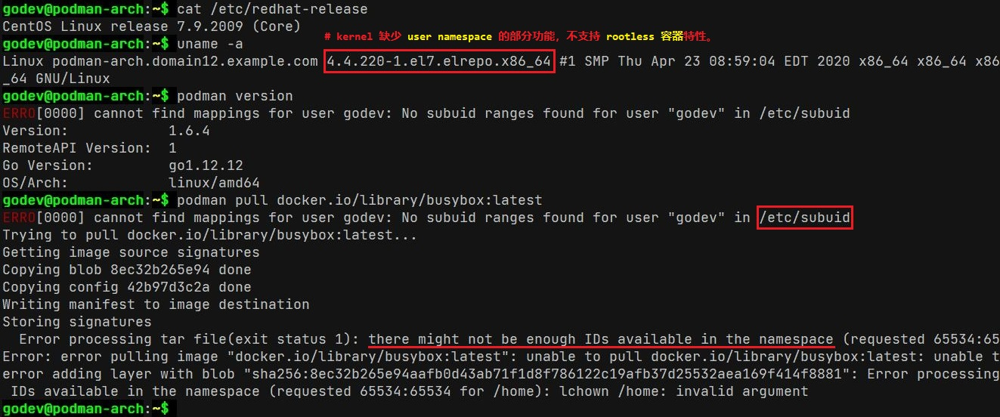普通用户 rootless 容器兼容性比较：
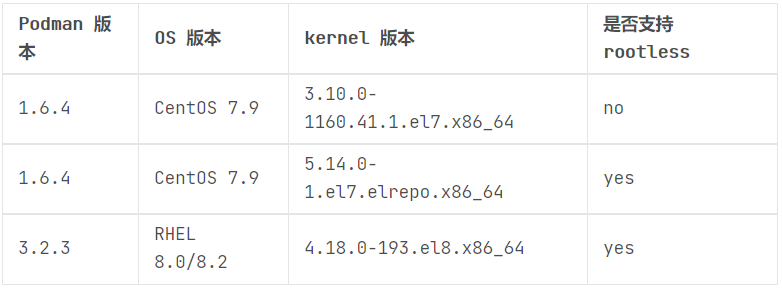📌注意：
rootless 容器特性取决于 kernel 的版本，不取决于 OS 与 Podman 的版本。
- 由于
user namespace特性在 kernel4.9.0之后出现，因此升级 kernel 即可解决 rootless 问题。 - 关于 rootless 特性在 RHEL 8 中的设置，可 点击此处 参考 Red Hat 的官方配置说明。
- 由于
Podman 的扩展功能：
cockpit-podman软件包作为 cockpit 插件可集成于Web UI中，实现 Web UI 管理容器。cockpit-podman 服务安装与启用：
1
2
3
4
5
6$ sudo yum install -y cockpit-podman
$ sudo systemctl enable --now cockpit.socket
$ sudo systemctl status cockpit.service
# 安装 cockpit-podman 软件包，并启用 cockpit 服务。
$ sudo netstat -tunlp | grep 9090
# 查看 systemd 监听的 9090 端口是否启用在 Web UI 中可查看并管理 podman 容器与镜像：
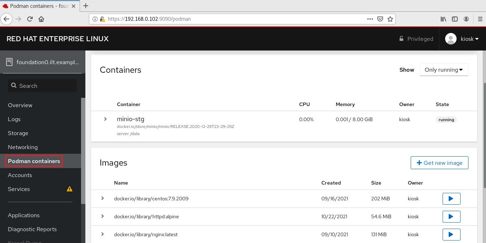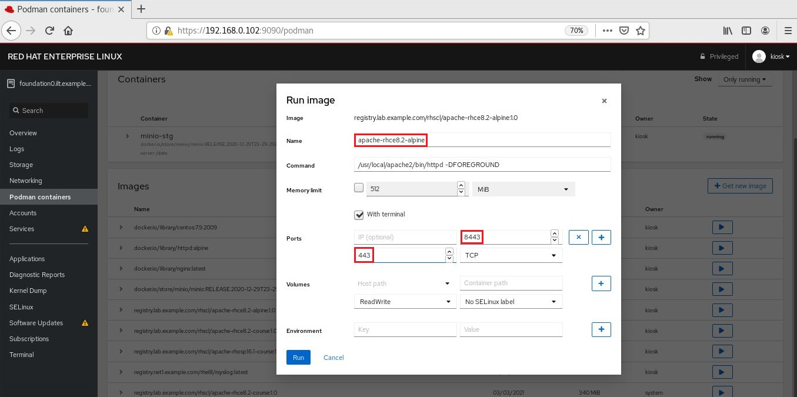
podman-compose旨在使用更轻量的方式实现单机容器编排，以用于替换docker-compose，这种方式将不再依赖守护进程与 root 权限，同时可使用 rootless 容器，详细示例见下文。- podman-compose 使用
Python开发，因此可直接使用pip3安装该组件，或使用 rpm 软件包方式安装。 - 由于 podman-compose 依然处于
dev阶段，仅作为功能测试使用，暂未受到 GA 环境支持。
Podman 在不同 OS 版本中的安装：
CentOS 7.x/8.x 或 RHEL 7.x/8.x 中：yum 命令使用 podman
rpm软件包安装1
2
3
4
5$ sudo yum install -y podman-3.2.3-0.11.module_el8.4.0+942+d25aada8.x86_64
# 安装 podman 最新版本，低版本 podman 存在较多 bug。
# 注意：
# 1. 需配置 CentOS 8 的 yum 软件源以安装最新版的 podman 及其依赖软件包
# 2. yum 安装 podman 时也将安装 containernetworking-plugins 软件包🤘 Ubuntu 20.04.2 LTS 中：apt-get 命令使用 podman
deb软件包安装1
2
3
4
5
6
7
8
9
10
11
12
13
14
15
16
17
18$ . /etc/os-release
# 查看当前的系统发行版
$ echo "deb https://download.opensuse.org/repositories/devel:/kubic:/libcontainers:/stable/xUbuntu_${VERSION_ID}/ /" | sudo tee /etc/apt/sources.list.d/devel:kubic:libcontainers:stable.list
$ curl -L "https://download.opensuse.org/repositories/devel:/kubic:/libcontainers:/stable/xUbuntu_${VERSION_ID}/Release.key" | sudo apt-key add -
# 添加 podman 软件源与 apt 公钥
$ sudo apt-get update -y
$ sudo apt-get upgrade -y
# 更新系统软件源并升级系统软件包
$ sudo apt-get install -y podman
Reading package lists... Done
Building dependency tree
Reading state information... Done
...
The following NEW packages will be installed:
catatonit conmon containernetworking-plugins containers-common criu crun fuse-overlayfs fuse3 libfuse3-3 libnet1 libprotobuf-c1
podman podman-machine-cni podman-plugins
...
# 安装 podman 与相关的软件包，包括 conmon、containernetworking-plugins、crun 等。安装参考链接：
🤘 Docker 与 Podman 进程管理方式比较：
Docker v20.10.8 使用
dockerd与containerd守护进程管理容器与镜像的生命周期，运行状态如下所示：1
2
3
4
5
6
7
8
9
10
11
12
13
14
15
16
17
18
19
20
21
22
23
24
25
26
27
28
29
30
31
32
33
34
35
36
37
38
39
40
41
42$ sudo systemctl status docker.service
● docker.service - Docker Application Container Engine
Loaded: loaded (/usr/lib/systemd/system/docker.service; enabled; vendor preset: disabled)
Active: active (running) since Wed 2022-10-19 10:53:04 CST; 6min ago
Docs: https://docs.docker.com
Main PID: 79556 (dockerd)
Tasks: 21
Memory: 42.6M
CGroup: /system.slice/docker.service
├─79556 /usr/bin/dockerd -H fd:// --containerd=/run/containerd/containerd.sock
├─79677 /usr/bin/docker-proxy -proto tcp -host-ip 0.0.0.0 -host-port 4000 -container-ip 172.17.0.2 -container-port 4000
└─79683 /usr/bin/docker-proxy -proto tcp -host-ip :: -host-port 4000 -container-ip 172.17.0.2 -container-port 4000
Oct 19 10:53:04 cloud-ctl.domain12.example.com dockerd[79556]: time="2022-10-19T10:53:04.197803867+08:00" level=info msg="scheme \"unix\" not registered, fallback to default scheme" module=grpc
Oct 19 10:53:04 cloud-ctl.domain12.example.com dockerd[79556]: time="2022-10-19T10:53:04.197837924+08:00" level=info msg="ccResolverWrapper: sending update to cc: {[{unix:///run/containerd/containerd.sock <nil> 0 <nil>}] <nil> <nil>}" module=grpc
Oct 19 10:53:04 cloud-ctl.domain12.example.com dockerd[79556]: time="2022-10-19T10:53:04.197860326+08:00" level=info msg="ClientConn switching balancer to \"pick_first\"" module=grpc
Oct 19 10:53:04 cloud-ctl.domain12.example.com dockerd[79556]: time="2022-10-19T10:53:04.220416627+08:00" level=info msg="Loading containers: start."
Oct 19 10:53:04 cloud-ctl.domain12.example.com dockerd[79556]: time="2022-10-19T10:53:04.347884960+08:00" level=info msg="Default bridge (docker0) is assigned with an IP address 172.17.0.0/16. Daemon option --bip can be used to set a preferred IP address"
Oct 19 10:53:04 cloud-ctl.domain12.example.com dockerd[79556]: time="2022-10-19T10:53:04.725361851+08:00" level=info msg="Loading containers: done."
Oct 19 10:53:04 cloud-ctl.domain12.example.com dockerd[79556]: time="2022-10-19T10:53:04.755449128+08:00" level=info msg="Docker daemon" commit=75249d8 graphdriver(s)=overlay2 version=20.10.8
Oct 19 10:53:04 cloud-ctl.domain12.example.com dockerd[79556]: time="2022-10-19T10:53:04.755527994+08:00" level=info msg="Daemon has completed initialization"
Oct 19 10:53:04 cloud-ctl.domain12.example.com systemd[1]: Started Docker Application Container Engine.
Oct 19 10:53:04 cloud-ctl.domain12.example.com dockerd[79556]: time="2022-10-19T10:53:04.776865058+08:00" level=info msg="API listen on /var/run/docker.sock"
# dockerd 守护进程的运行状态
$ sudo systemctl status containerd
● containerd.service - containerd container runtime
Loaded: loaded (/usr/lib/systemd/system/containerd.service; enabled; vendor preset: disabled)
Active: active (running) since Tue 2022-10-18 15:08:06 CST; 20h ago
Docs: https://containerd.io
Main PID: 1892 (containerd)
Tasks: 20
Memory: 103.4M
CGroup: /system.slice/containerd.service
├─ 1892 /usr/bin/containerd
└─79696 /usr/bin/containerd-shim-runc-v2 -namespace moby -id 3ea752c1cce6a65b39af7f68c971186e020992514b663ab7a917f47da70450fa -address /run/containerd/containerd.sock
# containerd 通过调用 containerd-shim-runc-v2 运行指定容器
$ sudo ps -ef | grep -E "dockerd|containerd|containerd-shim-runc-v2"
root 1892 1 0 Oct18 ? 00:05:01 /usr/bin/containerd
root 79556 1 0 10:53 ? 00:00:03 /usr/bin/dockerd -H fd:// --containerd=/run/containerd/containerd.sock
root 79696 1 0 10:53 ? 00:00:01 /usr/bin/containerd-shim-runc-v2 -namespace moby -id 3ea752c1cce6a65b39af7f68c971186e020992514b663ab7a917f47da70450fa -address /run/containerd/containerd.sock
# PID 79696 为实际的容器运行进程Podman 不使用守护进程的方式运行或管理容器，对于 rootfull 容器或 rootless 容器的运行方式存在差异：
rootfull 容器的进程：
👉 以交互式方式运行的容器进程状态如下所示：1
2
3
4$ sudo ps -ef | egrep "podman|slirp4netns|conmon"
root 3879 3476 1 06:31 pts/3 00:00:00 podman run -it --name=mydebian docker.io/library/debian:latest /bin/sh
root 3945 1 0 06:31 ? 00:00:00 /usr/bin/conmon --api-version 1 -c 29260258303cef76f1191c8b83f16eb7ba70c5424bb17a729e2d3b051680adba -u 29260258303cef76f1191c8b83f16eb7ba70c5424bb17a729e2d3b051680adba -r /usr/bin/crun -b /var/lib/containers/storage/overlay-containers/29260258303cef76f1191c8b83f16eb7ba70c5424bb17a729e2d3b051680adba/userdata -p /run/containers/storage/overlay-containers/29260258303cef76f1191c8b83f16eb7ba70c5424bb17a729e2d3b051680adba/userdata/pidfile -n mydebian --exit-dir /run/libpod/exits --full-attach -s -l journald --log-level warning --runtime-arg --log-format=json --runtime-arg --log --runtime-arg=/run/containers/storage/overlay-containers/29260258303cef76f1191c8b83f16eb7ba70c5424bb17a729e2d3b051680adba/userdata/oci-log -t --conmon-pidfile /run/containers/storage/overlay-containers/29260258303cef76f1191c8b83f16eb7ba70c5424bb17a729e2d3b051680adba/userdata/conmon.pid --exit-command /usr/bin/podman --exit-command-arg --root --exit-command-arg /var/lib/containers/storage --exit-command-arg --runroot --exit-command-arg /run/containers/storage --exit-command-arg --log-level --exit-command-arg warning --exit-command-arg --cgroup-manager --exit-command-arg systemd --exit-command-arg --tmpdir --exit-command-arg /run/libpod --exit-command-arg --network-config-dir --exit-command-arg --exit-command-arg --network-backend --exit-command-arg cni --exit-command-arg --volumepath --exit-command-arg /var/lib/containers/storage/volumes --exit-command-arg --runtime --exit-command-arg crun --exit-command-arg --storage-driver --exit-command-arg overlay --exit-command-arg --storage-opt --exit-command-arg overlay.mountopt=nodev,metacopy=on --exit-command-arg --events-backend --exit-command-arg journald --exit-command-arg container --exit-command-arg cleanup --exit-command-arg 29260258303cef76f1191c8b83f16eb7ba70c5424bb17a729e2d3b051680adba
# 由于具有交互式命令行运行依然保留 podman 进程👉 以
detach方式（后台）运行的容器进程状态如下所示：1
2
3
4$ sudo ps -ef | egrep "podman|slirp4netns|conmon"
root 3744 1 0 06:25 ? 00:00:00 /usr/bin/conmon --api-version 1 -c b8ad3fce848ef26197a1d8bd43be5a2a72c66211e05cd90ccfaa55e1515ed272 -u b8ad3fce848ef26197a1d8bd43be5a2a72c66211e05cd90ccfaa55e1515ed272 -r /usr/bin/crun -b /var/lib/containers/storage/overlay-containers/b8ad3fce848ef26197a1d8bd43be5a2a72c66211e05cd90ccfaa55e1515ed272/userdata -p /run/containers/storage/overlay-containers/b8ad3fce848ef26197a1d8bd43be5a2a72c66211e05cd90ccfaa55e1515ed272/userdata/pidfile -n apache-rhce8.2-alpine --exit-dir /run/libpod/exits --full-attach -s -l journald --log-level warning --runtime-arg --log-format=json --runtime-arg --log --runtime-arg=/run/containers/storage/overlay-containers/b8ad3fce848ef26197a1d8bd43be5a2a72c66211e05cd90ccfaa55e1515ed272/userdata/oci-log --conmon-pidfile /run/containers/storage/overlay-containers/b8ad3fce848ef26197a1d8bd43be5a2a72c66211e05cd90ccfaa55e1515ed272/userdata/conmon.pid --exit-command /usr/bin/podman --exit-command-arg --root --exit-command-arg /var/lib/containers/storage --exit-command-arg --runroot --exit-command-arg /run/containers/storage --exit-command-arg --log-level --exit-command-arg warning --exit-command-arg --cgroup-manager --exit-command-arg systemd --exit-command-arg --tmpdir --exit-command-arg /run/libpod --exit-command-arg --network-config-dir --exit-command-arg --exit-command-arg --network-backend --exit-command-arg cni --exit-command-arg --volumepath --exit-command-arg /var/lib/containers/storage/volumes --exit-command-arg --runtime --exit-command-arg crun --exit-command-arg --storage-driver --exit-command-arg overlay --exit-command-arg --storage-opt --exit-command-arg overlay.mountopt=nodev,metacopy=on --exit-command-arg --events-backend --exit-command-arg journald --exit-command-arg container --exit-command-arg cleanup --exit-command-arg b8ad3fce848ef26197a1d8bd43be5a2a72c66211e05cd90ccfaa55e1515ed272
# podman 在调用 conmon 程序创建并运行容器后退出，而 rootfull 容器的 CNI 插件
# 可直接使用 iptables 的方式实现。rootless 容器的进程：
👉 以交互式方式运行的容器进程状态如下所示：1
2
3
4
5
6
7
8
9
10
11
12
13
14$ ps -ef | egrep "podman|slirp4netns|conmon"
core 3418 2762 0 06:17 pts/2 00:00:05 podman run -it --name=mybusybox docker.io/library/busybox:latest /bin/sh
core 3430 3418 0 06:17 pts/2 00:00:00 /usr/bin/slirp4netns --disable-host-loopback --mtu=65520 --enable-sandbox --enable-seccomp --enable-ipv6 -c -e 3 -r 4 --netns-type=path /run/user/1000/netns/netns-19eb5630-c0a8-4ea9-8790-76ecdcdf2dbc tap0
core 3433 1 0 06:17 ? 00:00:00 /usr/bin/conmon --api-version 1 -c 5acc7fc4127d5492866b966d6c0c04dce880995c49eddb8421c11e7efc661160 -u 5acc7fc4127d5492866b966d6c0c04dce880995c49eddb8421c11e7efc661160 -r /usr/bin/crun -b /var/home/core/.local/share/containers/storage/overlay-containers/5acc7fc4127d5492866b966d6c0c04dce880995c49eddb8421c11e7efc661160/userdata -p /run/user/1000/containers/overlay-containers/5acc7fc4127d5492866b966d6c0c04dce880995c49eddb8421c11e7efc661160/userdata/pidfile -n mybusybox --exit-dir /run/user/1000/libpod/tmp/exits --full-attach -s -l journald --log-level warning --runtime-arg --log-format=json --runtime-arg --log --runtime-arg=/run/user/1000/containers/overlay-containers/5acc7fc4127d5492866b966d6c0c04dce880995c49eddb8421c11e7efc661160/userdata/oci-log -t --conmon-pidfile /run/user/1000/containers/overlay-containers/5acc7fc4127d5492866b966d6c0c04dce880995c49eddb8421c11e7efc661160/userdata/conmon.pid --exit-command /usr/bin/podman --exit-command-arg --root --exit-command-arg /var/home/core/.local/share/containers/storage --exit-command-arg --runroot --exit-command-arg /run/user/1000/containers --exit-command-arg --log-level --exit-command-arg warning --exit-command-arg --cgroup-manager --exit-command-arg systemd --exit-command-arg --tmpdir --exit-command-arg /run/user/1000/libpod/tmp --exit-command-arg --network-config-dir --exit-command-arg --exit-command-arg --network-backend --exit-command-arg netavark --exit-command-arg --volumepath --exit-command-arg /var/home/core/.local/share/containers/storage/volumes --exit-command-arg --runtime --exit-command-arg crun --exit-command-arg --storage-driver --exit-command-arg overlay --exit-command-arg --events-backend --exit-command-arg journald --exit-command-arg container --exit-command-arg cleanup --exit-command-arg 5acc7fc4127d5492866b966d6c0c04dce880995c49eddb8421c11e7efc661160
# 由于具有交互式命令行运行依然保留 podman 进程，并且由 podman 进程创建 slirp4netns 子进程
# 用于 rootless 容器的网络命名空间之间的通信。
```
👉 以 `detach` 方式（后台）运行的容器进程状态如下所示：
```bash
$ ps -ef | egrep "podman|slirp4netns|conmon"
core 3308 1 0 06:15 pts/2 00:00:00 /usr/bin/slirp4netns --disable-host-loopback --mtu=65520 --enable-sandbox --enable-seccomp --enable-ipv6 -c -e 3 -r 4 --netns-type=path /run/user/1000/netns/netns-f9f6f9dd-bf80-f6ca-6f39-7c9d9cd6beea tap0
core 3325 1 0 06:15 ? 00:00:00 /usr/bin/conmon --api-version 1 -c 91b49d5726023b9ca1c4e30a6665fc21c9b3c3182a1accddb0adb259d0ba20ab -u 91b49d5726023b9ca1c4e30a6665fc21c9b3c3182a1accddb0adb259d0ba20ab -r /usr/bin/crun -b /var/home/core/.local/share/containers/storage/overlay-containers/91b49d5726023b9ca1c4e30a6665fc21c9b3c3182a1accddb0adb259d0ba20ab/userdata -p /run/user/1000/containers/overlay-containers/91b49d5726023b9ca1c4e30a6665fc21c9b3c3182a1accddb0adb259d0ba20ab/userdata/pidfile -n apache-rhce8.2-alpine --exit-dir /run/user/1000/libpod/tmp/exits --full-attach -s -l journald --log-level warning --runtime-arg --log-format=json --runtime-arg --log --runtime-arg=/run/user/1000/containers/overlay-containers/91b49d5726023b9ca1c4e30a6665fc21c9b3c3182a1accddb0adb259d0ba20ab/userdata/oci-log --conmon-pidfile /run/user/1000/containers/overlay-containers/91b49d5726023b9ca1c4e30a6665fc21c9b3c3182a1accddb0adb259d0ba20ab/userdata/conmon.pid --exit-command /usr/bin/podman --exit-command-arg --root --exit-command-arg /var/home/core/.local/share/containers/storage --exit-command-arg --runroot --exit-command-arg /run/user/1000/containers --exit-command-arg --log-level --exit-command-arg warning --exit-command-arg --cgroup-manager --exit-command-arg systemd --exit-command-arg --tmpdir --exit-command-arg /run/user/1000/libpod/tmp --exit-command-arg --network-config-dir --exit-command-arg --exit-command-arg --network-backend --exit-command-arg netavark --exit-command-arg --volumepath --exit-command-arg /var/home/core/.local/share/containers/storage/volumes --exit-command-arg --runtime --exit-command-arg crun --exit-command-arg --storage-driver --exit-command-arg overlay --exit-command-arg --events-backend --exit-command-arg journald --exit-command-arg container --exit-command-arg cleanup --exit-command-arg 91b49d5726023b9ca1c4e30a6665fc21c9b3c3182a1accddb0adb259d0ba20ab
# podman 在调用 conmon 程序创建并运行容器后退出，并且由 podman 进程创建 slirp4netns 子进程
# 用于 rootless 容器的网络命名空间之间的通信。
Podman 的网络实现原理（rootfull 与 rootless）：
- Podman 支持的容器网络模式如下所示：
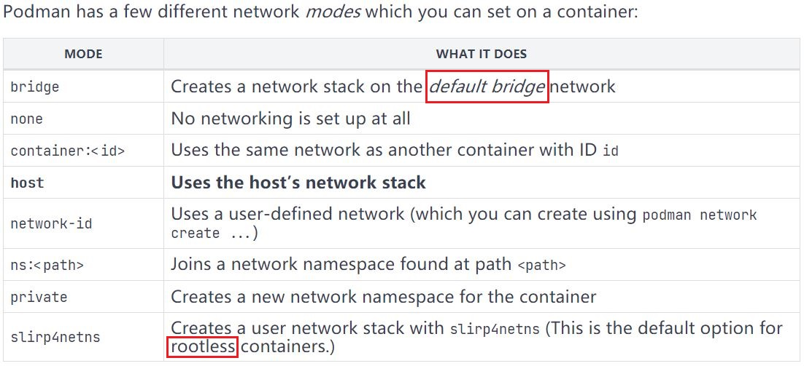 root 用户运行 rootfull 容器网络分析：
- 默认情况下，rootfull 容器使用 bridge 网络模式，并且在未创建任何容器前系统上不会自动创建
cni-podman0网桥，只有创建容器后自动生成。 root 用户使用全局范围内的 CNI 插件，podman 默认使用
bridge、portmap插件，其配置文件如下：1
2
3
4
5
6
7
8
9
10
11
12
13
14
15
16
17
18
19
20
21
22
23
24
25
26
27
28
29
30
31
32
33
34
35
36
37
38
39
40
41
42
43$ cat /etc/cni/net.d/87-podman-bridge.conflist
{
"cniVersion": "0.4.0",
"name": "podman",
"plugins": [
{
"type": "bridge",
"bridge": "cni-podman0",
"isGateway": true,
"ipMasq": true,
"hairpinMode": true,
"ipam": {
"type": "host-local",
"routes": [{ "dst": "0.0.0.0/0" }],
"ranges": [
[
{
"subnet": "10.88.0.0/16",
"gateway": "10.88.0.1"
}
]
]
}
},
{
"type": "portmap",
"capabilities": {
"portMappings": true
}
},
{
"type": "firewall"
},
{
"type": "tuning"
}
]
# 该配置文件位于 Podman 源码 cni/87-podman-bridge.conflist
# Podman 可调用 bridge、portmap 等 CNI 插件
$ sudo podman inspect <container_name> | jq .[0].HostConfig.NetworkMode
"bridge"
# root 用户创建的容器网络模式root 用户创建具有端口映射的容器时，iptables filter 表与 nat 表规则将相应增加：
1
2
3
4
5
6
7
8
9
10
11
12
13
14
15
16
17
18
19
20
21
22
23
24
25
26
27
28
29
30
31
32# ----- filter 表中创建新容器后的新增规则 -----
*filter
-A FORWARD -m comment --comment "CNI firewall plugin rules" -j CNI-FORWARD
-A CNI-FORWARD -m comment --comment "CNI firewall plugin admin overrides" -j CNI-ADMIN
-A CNI-FORWARD -d 10.88.0.3/32 -m conntrack --ctstate RELATED,ESTABLISHED -j ACCEPT
# 新增规则：允许 3 层转发目标地址为 10.88.0.3 的流量（进入容器的流量），conntrack 模块进行连接状态追踪。
# 当容器通过 MASQUERADE 对外访问，回包再次进入容器宿主机时不再通过 DNAT 转发，而通过 conntrack
# 记录的连接状态直接转发至该规则并通过 cni-podman0 网桥进入容器。
-A CNI-FORWARD -s 10.88.0.3/32 -j ACCEPT
# 新增规则：允许 3 层转发源地址为 10.88.0.3 的流量（出容器的流量）。
# ----- nat 表中创建新容器后的新增规则 -----
*nat
-A PREROUTING -m addrtype --dst-type LOCAL -j CNI-HOSTPORT-DNAT
-A POSTROUTING -m comment --comment "CNI portfwd requiring masquerade" -j CNI-HOSTPORT-MASQ
-A POSTROUTING -s 10.88.0.3/32 -m comment --comment "name: \"podman\" id: \"2d2b3521457cb1d9b7ae6657304d05789a854e7a48916276a40da543df9aa217\"" -j CNI-b6c5fb6c593e895d843cb5bd
# 新增规则：来自于 10.88.0.3 容器的流量转发至 CNI-b6c5fb6c593e895d843cb5bd 链
-A OUTPUT -m addrtype --dst-type LOCAL -j CNI-HOSTPORT-DNAT
# 启用 CNI 后即创建的规则，该规则接收来自本地应用的流量并转发至 CNI-HOSTPORT-DNAT 链
-A CNI-HOSTPORT-SETMARK -m comment --comment "CNI portfwd masquerade mark" -j MARK --set-xmark 0x2000/0x2000
-A CNI-HOSTPORT-MASQ -m mark --mark 0x2000/0x2000 -j MASQUERADE
### 以下 6 条在创建新容器时同时创建
-A CNI-HOSTPORT-DNAT -p tcp -m comment --comment "dnat name: \"podman\" id: \"2d2b3521457cb1d9b7ae6657304d05789a854e7a48916276a40da543df9aa217\"" -m multiport --dports 8843 -j CNI-DN-b6c5fb6c593e895d843cb
# 自定义 DNAT 链，发送至本地 8843 端口的流量转发至 CNI-DN-b6c5fb6c593e895d843cb 链。
-A CNI-b6c5fb6c593e895d843cb5bd -d 10.88.0.0/16 -m comment --comment "name: \"podman\" id: \"2d2b3521457cb1d9b7ae6657304d05789a854e7a48916276a40da543df9aa217\"" -j ACCEPT
# 允许转发目标网段为 10.88.0.0/16 的流量（进入容器的流量），该网段为容器所在的网络。
-A CNI-b6c5fb6c593e895d843cb5bd ! -d 224.0.0.0/4 -m comment --comment "name: \"podman\" id: \"2d2b3521457cb1d9b7ae6657304d05789a854e7a48916276a40da543df9aa217\"" -j MASQUERADE
# MASQUERADE 出容器流量
-A CNI-DN-b6c5fb6c593e895d843cb -s 10.88.0.0/16 -p tcp -m tcp --dport 8843 -j CNI-HOSTPORT-SETMARK
-A CNI-DN-b6c5fb6c593e895d843cb -s 127.0.0.1/32 -p tcp -m tcp --dport 8843 -j CNI-HOSTPORT-SETMARK
-A CNI-DN-b6c5fb6c593e895d843cb -p tcp -m tcp --dport 8843 -j DNAT --to-destination 10.88.0.3:443
# 自定义 DNAT 链实现容器宿主机至容器的端口映射🚀 示例：外部访问容器内 Web 服务时，涉及的宿主机 iptables：
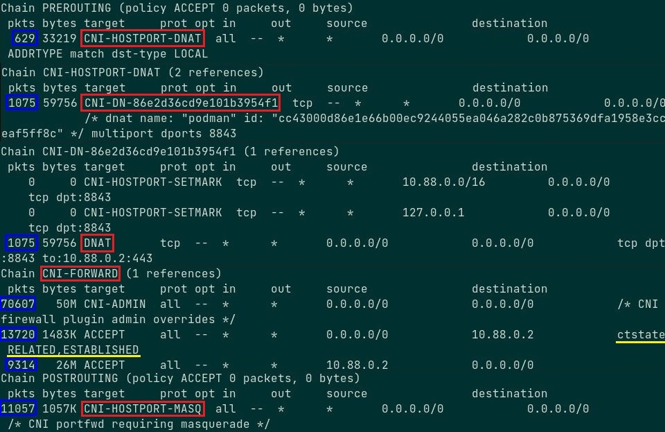从外部访问容器内 Web 服务时，流量将通过 PREROUTING 链及自定义链（CNI-HOSTPORT-DNAT、CNI-DN-xxxx、DNAT），经由 FORWARD 链及自定义链（CNI-FORWARD）的三层转发与cni-podman0网桥的二层转发进入容器，容器对外响应的流量将经过 cni-podman0 网桥转发，并经过 CNI-FORWARD 链与 POSTROUTING 链及自定义链（CNI-HOSTPORT-MASQ）出容器宿主机。🚀 示例：直接从容器内访问外部时，返回容器的回包将直接使用 conntrack 模块追踪的连接状态，流量通过
CNI-FORWARD链的三层转发与 cni-podman0 的二层转发至容器中，即，回包进入容器宿主机不再通过CNI-HOSTPORT-DNAT链。
如下所示，相关的 DNAT 链无流量通过（蓝框），CNI-FORWARD 链均有流量通过（蓝框）。
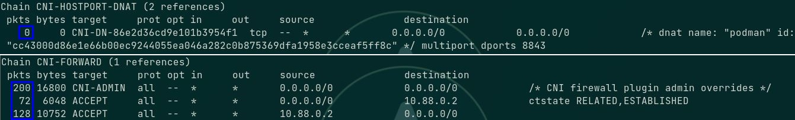📌 Kubernetes 相关问题提示：
- 容器或 pod 通过 cni 网桥桥接的方式在 Kubernetes 或 OpenShift3 中需在计算节点（worker node）上配置
net.bridge.bridge-nf-call-iptables与net.bridge.bridge-nf-call-iptables6内核参数，使 cni 二层网桥可调用 iptables 的 conntrack 模块，以解决前后端 pod 在同一节点上时，由于 pod 直连 cni 二层网桥，而二层网桥只实现二层转发，无法追踪前后端的连接状态，造成后端 pod 向前端 pod 回包时无法处于同一连接链路的问题，可 点击此处 获得更多帮助。 - 使用以上内核参数时，需加载
br_netfilter内核模块方能生效。
- 容器或 pod 通过 cni 网桥桥接的方式在 Kubernetes 或 OpenShift3 中需在计算节点（worker node）上配置
使用
iperf3工具的容器测试不同 rootfull 容器之间的网络性能，如下所示：
- 默认情况下，rootfull 容器使用 bridge 网络模式，并且在未创建任何容器前系统上不会自动创建
普通用户运行 rootless 容器网络分析：
slirp4netns程序支持 user rootless network namespace，而非通过iptables与 CNI 实现。👉 普通用户使用端口映射运行 rootless 容器时，默认情况下只能使用宿主机 1024 以上的端口实现映射，但可使用
net.ipv4.ip_unprivileged_port_start内核参数实现低于 1024 的端口开始映射，如下所示：1
2
3
4
5
6
7
8
9
10
11
12
13
14
15### 方式 1：###
$ sysctl -w net.ipv4.ip_unprivileged_port_start=80
# 临时配置：允许普通用户从 80 端口开始的端口映射运行 rootless 容器
### 方式 2：###
$ echo "net.ipv4.ip_unprivileged_port_start=80" >> /etc/sysctl.d/rootless.conf
# 永久配置：将该内核参数写入内核参数配置文件，使其开机永久生效。
$ sysctl -p
# 使配置的内核参数生效
- 普通用户创建的容器网络模式为 `slirp4netns`（slirp4netns 软件包实现）。
```bash
$ podman inspect <container_name> | jq .[0].HostConfig.NetworkMode
"slirp4netns"
# 普通用户创建的 rootless 容器网络模式每个普通用户运行 rootless 容器都将生成 slirp4netns 进程用于隔离该用户的
network namespace，以下分别使用 godev 与 hualf 用户运行 rootless 容器：
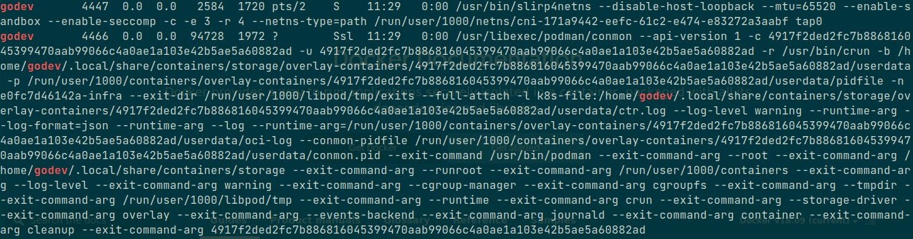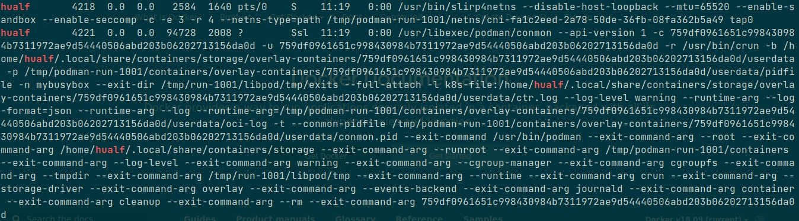- slirp4netns 实现的网络模式与带宽比较：
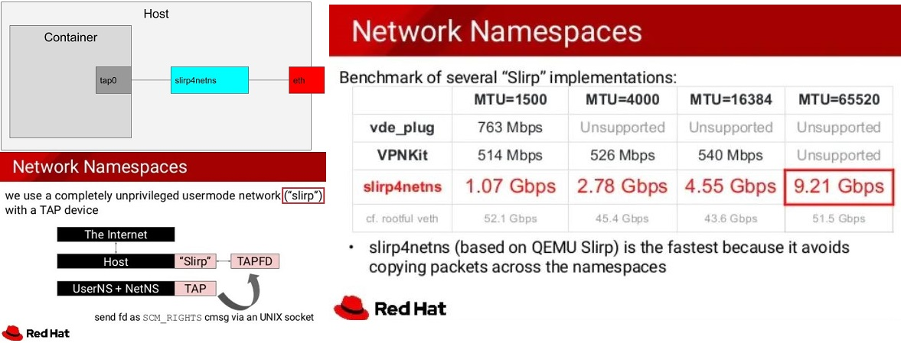 - 使用
iperf3工具的容器测试不同 rootless 容器之间的网络性能，如下所示：
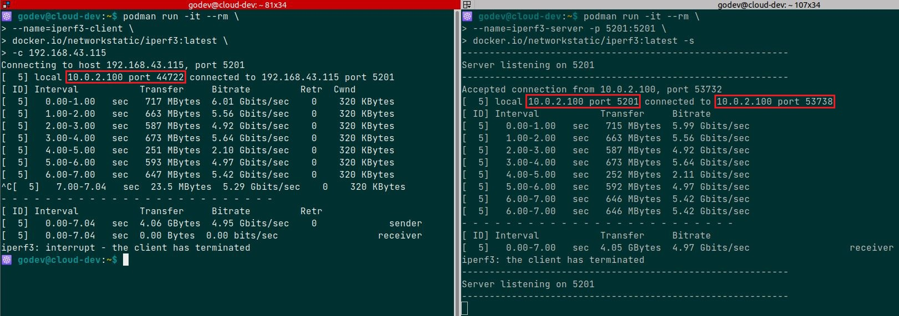对比 rootfull 容器之间的网络性能来看，slirp4netns 实现的 rootless 容器在不同的网络命名空间内的通信性能损耗较大，而 rootfull 容器之间的网络性能相比前者在此次测试中高出近 5 倍。 - 关于 slirp4netns 更加详细的内容，请参考 Github 项目。
Podman 的 macvlan 网络实现：
macvlan作为 CNI 在 Kubernetes 与 OpenShift v4 中作为Multus CNI支持的额外插件类型使用愈加广泛，集群中除了常规使用的 Flannel、Calico 等作为slow path的插件外，要求高性能的业务流量可使用 macvlan 直连 pod 宿主机物理网口实现fast path。- 为后续熟悉以上场景的实现，因此在 Podman
rootfull容器中使用 macvlan 网络模式。 - 关于 macvlan 的基础知识可参考 Linux 虚拟网卡技术：Macvlan 与 linux 网络虚拟化：macvlan
macvlan 特性由
Linux kernel支持，笔者的实验环境满足 macvlan 的要求，请使用如下命令确定：1
2
3
4$ sudo lsmod | grep macvlan
# 若无任何返回，说明还未加载 macvlan 内核模块。
$ sudo modprobe macvlan
# 加载 macvlan 内核模块，若执行报错，说明 kernel 不支持该特性。podman 与 macvlan 类型网络的集成，如下所示：
1
2
3
4
5
6
7
8
9
10$ sudo podman network create -d macvlan -o parent=ens33 <network_name>
/etc/cni/net.d/<network_name>.conflist
# 创建 macvlan 类型网络
$ sudo podman network ls
$ sudo /opt/cni/bin/dhcp daemon
# 在另一个窗口中启动 dhcp 守护进程供 macvlan 插件调用，为容器网口分配 IP 地址。
$ sudo podman run -it --rm \
--name <container_name> --network=<network_name> \
<container_image>:<tag> /bin/sh
# 创建支持 macvlan 类型网络的 rootfull 容器从与 rootfull 容器在同一广播域的其他节点上 ping 该容器，可正常通信：
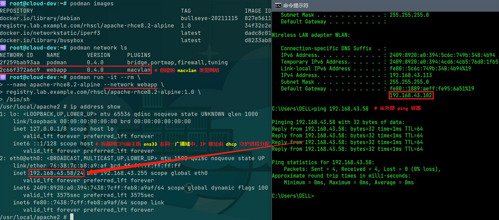🤔 以上示例的容器中运行 Web 服务（可暴露 443 端口），使用 macvlan 网络模式可打通与同一广播域中外部节点的通信，但无法访问其中的服务，可采取何种方法解决该问题？
Podman rootless 容器用户映射实现方式：
- Podman rootless 容器的实现核心在于解决 network namespace（NetNS） 与 user namespace（UserNS） 的问题，前文已介绍 NetNS 的实现方式，后文将介绍 UserNS 的实现方式。
若要使用 rootless 容器，需确认 OS 是否开启 user namespace 功能：
1
2$ sudo sysctl -a | grep user\.max_user_namespaces
user.max_user_namespaces = 47494系统上每创建一个用户就会在
/etc/subuid与/etc/subgid中生成对应用户在其用户命名空间中的映射规则，以 /etc/subuid 为例，参数以冒号分隔，每个参数含义如下所示：- 第一个参数（uid）：用户名称
- 第二个参数（loweruid）：用户命名空间中起始的映射 uid
- 第三个参数（count）：用户命名空间内部与外部可映射 uid 数量（可理解为所有容器普通用户的 uid 数量和）
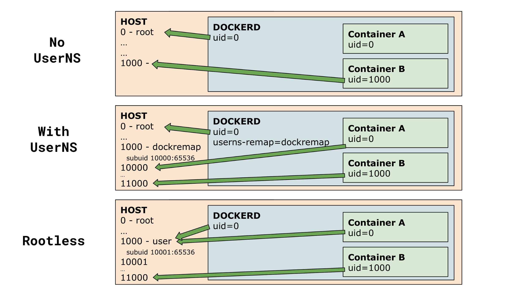 - 以上两个文件允许运行进程的 uid 映射范围，在
/proc/<pid>/uid_map中定义。 - 可过滤容器
conmon进程的 pid 确认每个容器中的 uid 映射情况，参见以下示例。 - 关于以上两个文件的具体说明可参考
newuidmap与newgidmap命令的 man 手册。 可参考 Podman 官方推荐的命令创建 uid 的映射，如下所示：
1
2
3
4
5
6
7
8$ sudo usermod --add-subuids 10000-75535 $(whoami)
# ----- 示例 -----
$ sudo cat /etc/subuid
appuser:10000:500
$ sudo cat /etc/subgid
appuser:500:50
# 该用户创建的 user namespace 中可以使用从 10000 开始的 500 个 UID 和从 500 开始的 50 个 GID 的映射。🚀 示例：
普通用户 hualf 在 /etc/subuid 中映射为 hualf:165536:65536，说明在该用户的用户命名空间中可嵌套一个或多个用户命名空间（或容器），每个容器中的 root 用户 uid 0 都映射为 hualf 用户的 uid 1001（运行容器进程的用户），而容器中普通用户的 uid 映射至宿主机的 subuid 范围中，对于此例 subuid 范围为 165536~231071，容器中的 uid 1 用户映射为宿主机 uid 165536，因此容器中 admin 用户 uid 1000 映射为宿主机 uid 166535（165536+999）。
通过容器宿主机上每个普通用户的用户命名空间的 subuid 映射范围，可分配众多 uid 在 rootless 容器中运行应用进程。
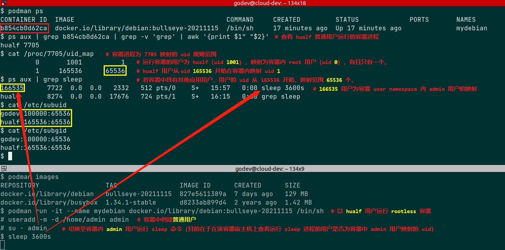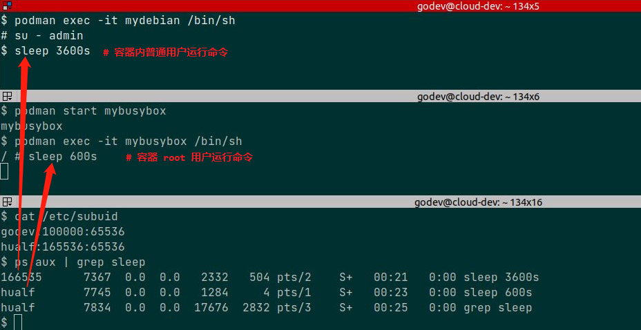
参考链接：
- Reintroduction of Podman
- Using pods with Podman on Fedora
- Configuring container networking with Podman
- RedHat docs - Building, running, and managing Linux containers on Red Hat Enterprise Linux 8
- 容器安全拾遗 - Rootless Container初探
- Documentation for /proc/sys/user/
- docker docs - Overview of Docker Compose
- CNI docs - firewall plugin
- CNI docs - Port-mapping plugin
- https://fossies.org/linux/podman/docs/tutorials/basic_networking.md